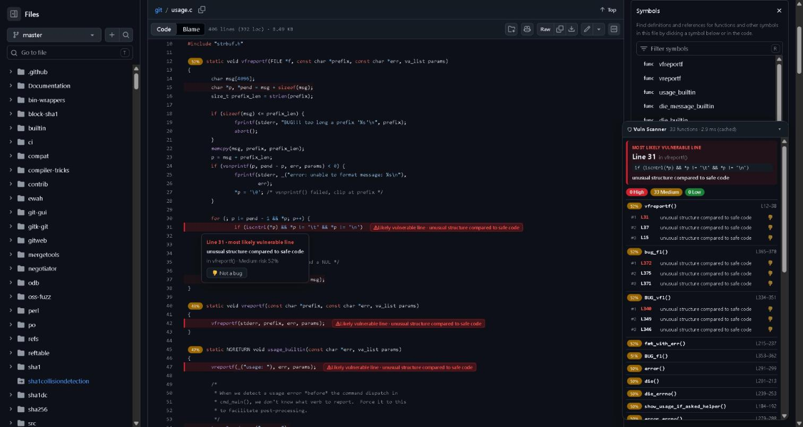

Security bugs in C and C++ (like copying text into a buffer that is too small) cause real attacks. This project builds a tool that looks at C/C++ code on GitHub and says: "this function looks risky, and this line is the most suspicious."
Every C/C++ file is split into functions. Each function is turned into a graph: a tree of its grammar, plus links for "what runs next" and "where a variable is used again".
A graph neural network (GraphSAGE) studied 24,000 real functions from 98 open-source projects, about 1 in 20 of which had a known security bug, and learned what risky code looks like.
For a new file it gives each function a risk score, then ranks the lines inside it and names the most likely vulnerable line with a short reason.
strcpy") raise lots of false alarms
and miss bugs that depend on structure. Our model understands structure, and in testing
on projects it had never seen it ranked risky functions about twice as well as
those tools. Honest catch: simply ranking functions by length does just as well
(page 9), so most of what it learned is "long functions are riskier".
Open any .c or .cpp file on GitHub. The Chrome extension adds a
risk % next to every function, a red "⚠ Likely vulnerable line" label on the most
suspicious line, and a side panel that names the single most likely vulnerable line in the
whole file. Click it to jump there.
Two common shortcuts both fall short. Our idea is to keep the code's shape, not just its words.
1void handle(char *input) { 2 char buffer[64]; // room for 64 characters 3 strcpy(buffer, input); // copies ALL of input, even if longer 4 process(buffer); 5}
If input is longer than 64 characters,
line 3 writes past the end of buffer: a buffer overflow, one of the
most common ways attackers take over programs (CWE-119).
Tools like Flawfinder search for dangerous words such as
strcpy. They are fast, but:
strcpy, even safe ones → many false alarmsMachine-learning tools often read code like an essay: a bag of words. But:
ifA reviewer has limited time. So the most useful tool is not one that is right "on average", but one that puts the truly buggy functions at the top of the list, and then shows which line to look at. Everything we measure is about that.
The project has two halves: training (done once, offline) and scanning (every time you open a file on GitHub).
| Job | Tool | In one line |
|---|---|---|
| Read C/C++ grammar | tree-sitter | turns source code into a syntax tree |
| Neural network on graphs | PyTorch Geometric | provides the GraphSAGE layers |
| Baselines | Flawfinder, scikit-learn | a rule scanner and a text classifier to compare against |
| Server | FastAPI + SQLite | answers scan requests; remembers past scans |
| On-page display | Chrome extension | plain JavaScript, no frameworks |
We used Big-Vul: C/C++ functions from real open-source projects, where each vulnerable function comes from a real security fix (a CVE).
That's realistic: most code is fine. But it means a lazy model that always says "safe" is right 94% of the time and useless. So we never judge by plain accuracy (see page 9).
Train: 1,222 buggy (5.1%) · Validation: 172 buggy (5.7%) · Test: 193 buggy (6.4%). No project appears in two groups.
tree-sitter reads each function and builds its syntax tree, the same structure a compiler sees. Every meaningful piece becomes a node.
1int copy(char *src) { 2 char buf[10]; 3 strcpy(buf, src); 4 return 0; 5}
Each node remembers three things:
call_expressionstrcpySimplified drawing: the real graph for this function has 24 nodes.
Parent ↔ child in the syntax tree: "this call is inside this statement". This is the backbone.
Statement ↔ the statement right after it in the same block: a simple stand-in for "what runs next".
Each use of a name ↔ its next
use: buf is declared on line 2 and used on line 3. A simple stand-in for
"data flows here".
A neural network only understands numbers. So we describe every node with a list of 166 numbers, and every whole function with 6 measurements.
if_statement), plus one for
"other".buf) is hashed into 64 slots, so similar words land in the same slots
without storing a dictionary.strcpy, strcat, gets,
sprintf, memcpy, scanf, malloc,
free.| Measurement | Plain meaning | Buggy avg | Safe avg |
|---|---|---|---|
| Lines of code | how long the function is | 49.4 | 24.0 |
| Cyclomatic complexity | how many decision points (if, for, while, &&, …) | 9.3 | 4.8 |
| Pointer operations | how often it uses *, ->, & | 25.8 | 11.4 |
| Risky API calls | calls to strcpy, memcpy, malloc, … | 0.24 | 0.07 |
| Max nesting depth | deepest level of { } inside { } | 2.3 | 1.7 |
| Parameters | how many inputs the function takes | 2.2 | 1.7 |
Before use, each measurement is rescaled using the training set's average and spread, so "lines of code" (tens) doesn't drown out "risky calls" (fractions).
The model reads a function's graph and outputs one number: the probability that the function is vulnerable.
In each layer, every node looks at its neighbours, averages what they
say, and mixes that with what it already knew. After 3 layers, the
strcpy node "knows" it is inside a statement that copies into a
10-character buffer declared just above.
To summarise the whole function, the model gives every node an importance weight and takes a weighted average. We keep these weights: they help point at the risky line later (page 10).
The graph summary is glued to the 6 function measurements (page 7) before the final decision. That combination turned out to be the biggest win.
| Trick | Why we need it |
|---|---|
| Extra weight on bugs (×18.6) | Bugs are rare, so missing one costs 18.6× more than a false alarm. Otherwise the model just says "safe". |
| Early stopping | Stop when the validation score stops improving, before the model starts memorising. |
| Calibration (Platt scaling) | The extra weight pushes every score up. Platt scaling shifts and rescales them so "10%" really means about 10%. |
| Best threshold (0.116) | The cut-off for "risky" is picked where it works best on validation data. |
| Risk bands | Low: below the cut-off Medium: flagged High: 2× the cut-off |
All results are on the test set: 3,000 functions from 96 projects the model never saw during training.
Each version was trained 5 times with different random seeds (mean ± spread):
| Version | PR-AUC | What it tells us |
|---|---|---|
| Full Hybrid GraphSAGE | 0.222 ± 0.011 | our main model |
| Without the 6 measurements | 0.127 ± 0.005 | the measurements (mostly size) are the one clear help |
| GCN instead of GraphSAGE | 0.219 ± 0.011 | a tie: no layer type wins |
| Tree links only (no extra links) | 0.218 ± 0.017 | a tie: extra links neither help nor hurt |
A single run had suggested "tree links only" was better (0.228 vs 0.208). Repeating it showed that was luck.
A risk score alone isn't enough: a reviewer wants to know where to look. So we score every node, add the scores up per line, and rank the lines.
From the model's attention pooling: "how much did the model lean on this node when it judged the function?"
"If this node changed a tiny bit, how much would the risk score move?" Computed with one backward pass through the network.
Node importance = attention × saliency. A node only scores high if the model both looked at it and its decision depends on it.
strcpy, memcpy, malloc…) is listed first, with a
matching reason like "strcpy into a buffer with no length check".A real screenshot of the extension on git/usage.c, a file from the
Git project's source code (taken before the calibration fix, so the percentages are the old,
too-high ones).

A % next to every function's first line, coloured by band (green / yellow / red).
Each function's #1 line gets a red bar and a ⚠ label with the reason. Hover for details and a 👎 "Not a bug" button.
Names the most likely vulnerable line in the whole file, then lists every function by risk. Click any line to jump to it.
.c/.cpp/.h file.127.0.0.1:8000). Your code never goes to anyone else's server.| File | Functions | First scan | Next time (cached) |
|---|---|---|---|
sample.c (test file) | 3 | 24 ms | 2 ms |
git/usage.c (406 lines) | 33 | 0.19–0.36 s | 1–3 ms |
Real projects break in surprising ways. These are the ones worth knowing about.
Giving 80% of projects to training left only 819 test functions, because a few huge projects hold most of the code. Fix: pack whole projects so the function counts come out 80/10/10.
The dataset says which function is buggy, not which line. Fix: compare each function before and after its security fix; the changed lines are the answer key.
GitHub's security policy
stops page scripts from talking to localhost. Fix: the extension's
background worker makes the call instead.
Chrome sent
localhost to the IPv6 address, but the server only listened on IPv4.
Fix: use 127.0.0.1, plus a 10-second timeout and clear error messages.
C macros like
NORETURN confused the name finder. Fix: read the name from the part
attached to the ( ) parameter list.
GitHub's page redraws code lines while you scroll, wiping our highlights. Fix: quietly re-apply missing marks on scroll and every 1.5 seconds.
At first the function's name line nearly always won. Fix: the three line rules on page 10; the #1 line became correct about 2× as often.
The extra weight on bugs pushed every score up, and temperature scaling can't shift scores back down. Fix: Platt scaling; calibration error 0.446 → 0.014.
We added a second output to guess the bug type (CWE category, e.g. CWE-119 buffer errors). It barely beat simple guessing:
| Method | Accuracy | Macro-F1 |
|---|---|---|
| Always guess "Other" | 0.544 | 0.117 |
| Text model (TF-IDF) | 0.280 | 0.118 |
| Our type head | 0.495 | 0.151 |
Too few examples (~900), and the labels changed style over the years. So we chose not to show it in the extension; a wrong label would mislead. Reporting this honestly is part of good engineering.
Variable links
match by name. Two different i's in different places get linked by mistake.
Bugs that span several functions or files are invisible to it.
"Buggy" comes from fix commits; a function touched by a fix wasn't always the buggy one.
Ranking by function length alone works as well as the model. What the graph adds beyond size is not yet shown.
The named line is right about 1 time in 5. It tells a reviewer where to start, not what's wrong.
tree-sitter reads code without running the C preprocessor, so macro-heavy code can parse oddly.
All commands run from the project folder in PowerShell.
python -m venv .venv .venv\Scripts\activate pip install -r requirements.txt
python src/dataset.py --subset 30000 # download + clean + split python baselines/run_baselines.py # the 3 tools we compare against python src/build_graphs.py # code → graphs python src/prepare_features.py # graphs → numbers python src/train.py # train + results table python src/explain.py # line-level evaluation python src/analysis.py # EDA, size baselines, calibration
python -m uvicorn backend.app:app --port 8000
Wait for "Application startup complete", and keep this window open while you browse.
chrome://extensions and switch on Developer mode.extension folder.github.com/git/git/blob/master/usage.c.backend/. "Address already in use": a server is already
running; use that one or stop it. Changes not showing: restart the server and click
↻ on the extension card.